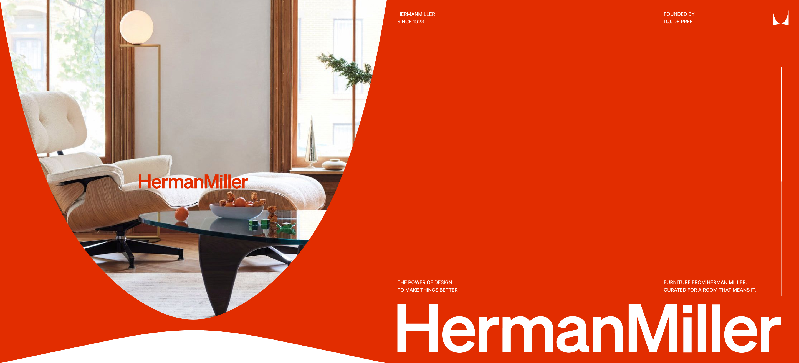
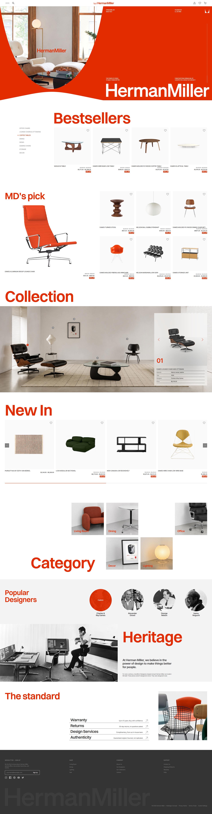

Project
Herman
Miller
(02)
- Project Type
- Web Redesign
- Tools
- HTML, Javascript, CSS, Photoshop, Illustrator
- Role
- UI/UX Design, Web Publishing, Web Redesign
Description
HERMAN MILLER는 상징적인 미드센추리 가구 브랜드를 보다 현대적이고 감각적인 비주얼로 재해석한 웹사이트 프로젝트입니다.
브랜드의 대표 컬러인 레드를 포인트로 그레이와 화이트 톤을 정교하게 조합하여 시각적 피로도는 낮추고, 가구 디자인 고유의 고급스러운 아이덴티티는 더욱 명확히 전달하도록 설계했습니다. 또한 MD's Pick, New In 등의 레이아웃과 상품 카드 구조를 체계적으로 정돈하고, 절제된 인터랙션을 적용해 사용자가 제품 특징에 직관적으로 몰입할 수 있도록 했습니다. 과도한 움직임보다는 세심한 그리드 정렬과 마우스 호버 모션을 통해 사용자 편의성을 극대화하고, 허먼밀러만의 차별화된 디지털 브랜드 경험을 완성했습니다.
Year
2026.08

0%
Scroll
